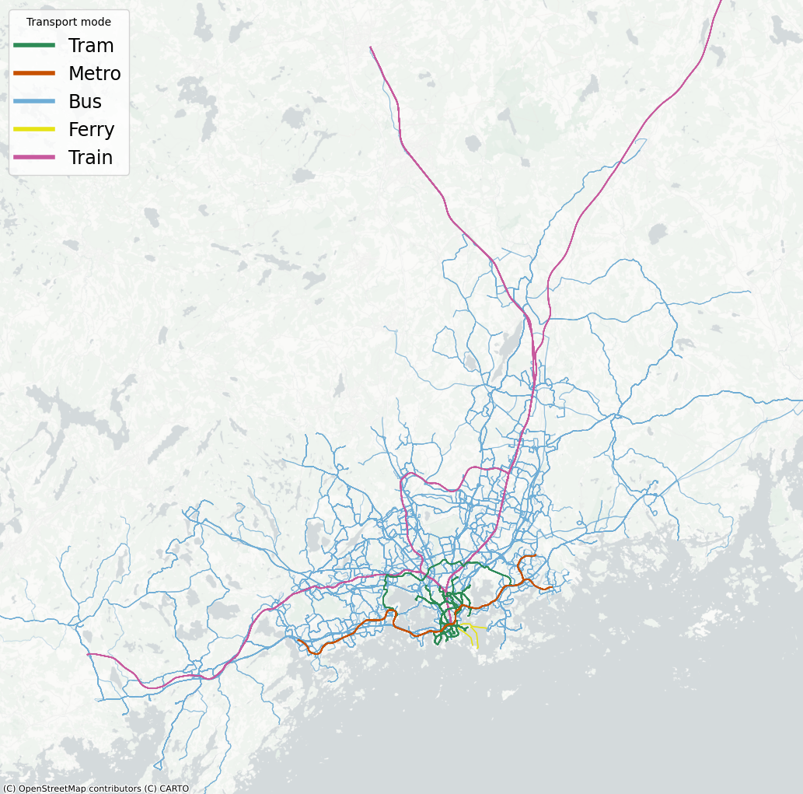

Public Transport System in Helsinki and Its Urban Area
This section includes two public transport visualizations: one for the wider Helsinki urban area and one for the City of Helsinki. Different colors represent different vehicle types, while more important lines, such as tram and metro routes, are shown with stronger, wider lines to stand out from the many bus routes.
Public Transport System in the Helsinki Urban Area

Public Transport System in the City of Helsinki